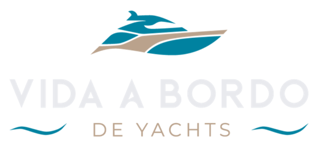
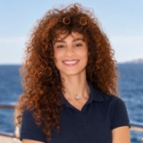
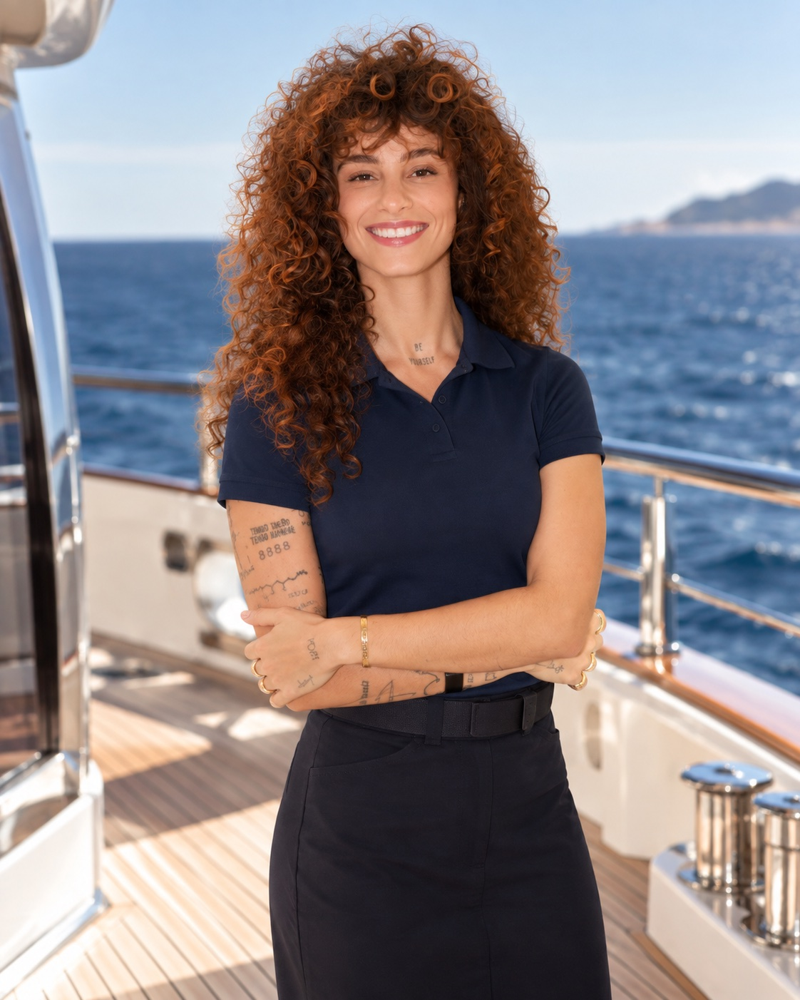
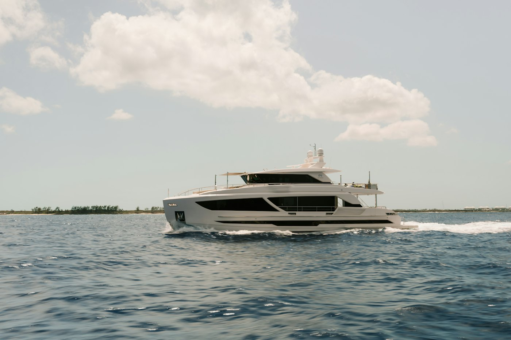

Sueñas con trabajar viajando por el mundo
Quieres convertir tu pasión por viajar en una carrera.

PTDel primer paso al embarque: información, estrategia y acompañamiento de quien ya recorrió este camino. Gana en dólares o euros viajando por el mundo.

Bárbara Kulaif
Fueron 6 años como cruise staff en MSC Cruceros y 4 años a bordo de yates de lujo. Bárbara empezó como Junior Stewardess, llegó a Chief Stewardess y participó en la temporada 12 de Below Deck.
Cuando decidió pasar de los cruceros a los yates, tardó casi ocho meses en conseguir su primera oportunidad, porque no encontraba información clara ni a alguien que la orientara. La mentoría nació para que tú no pases por eso: te mostramos el camino con claridad y te acompañamos en cada etapa.
Quieres convertir tu pasión por viajar en una carrera.
Buscas un ingreso en dólares o euros haciendo lo que te gusta.
A bordo, el alojamiento y la comida corren por cuenta del yate.
Empiezas desde cero, pero tienes ganas de aprender.
Y quieres dar el salto a la industria de los yates.
Tu experiencia en hospitalidad tiene mucho valor a bordo.
En los dos formatos la sesión es online y dura 1h30. El contenido es el mismo; lo que cambia es cómo vives la mentoría.
Una sesión exclusiva, en el día y horario que mejor te funcionen.
Además de resolver todas tus dudas, analizamos tu perfil, tu experiencia y tus objetivos para crear una estrategia personalizada para tu entrada en los yates. Incluye un Plan de Acción Personalizado en PDF, hecho solo para ti.
Un encuentro con mucho espacio para preguntas e intercambio de experiencias entre los participantes.
Aprendes también de las dudas y los procesos de quienes están entrando al mercado contigo. Los cupos por grupo son limitados.

La mentoría no termina en la sesión: te acompañamos durante 6 meses, desde el primer paso hasta el proceso de selección. Después, si quieres, puedes renovar el acompañamiento.
Resuelve tus preguntas a medida que avanzas en el proceso.
Comparte tus novedades y recibe orientación en cada paso.
Intercambia experiencias con personas que están en el mismo camino.
Una guía para usar durante todo tu recorrido hasta el embarque.
Háblanos por WhatsApp. Te explicamos cómo funciona, resolvemos tus dudas y te ayudamos a elegir entre la mentoría individual y en grupo.
Realizas el pago en dólares o euros de forma segura, por transferencia internacional con Wise.
En la individual eliges el día y la hora; en grupo recibes las fechas por WhatsApp. Y desde ahí empieza tu acompañamiento.
No. La mentoría está pensada para quien empieza desde cero y también para quien ya trabajó en cruceros o en hotelería y quiere dar el salto a los yates.
Tú eliges: español, inglés o portugués.
Sí. A bordo, el inglés es parte de la rutina con los huéspedes y con la tripulación, así que lo ideal es comunicarte con seguridad. Si tu inglés todavía está en desarrollo, la mentoría te ayuda a planificar esa preparación junto con los demás pasos.
No. La mentoría es de orientación: te mostramos el camino, armamos la estrategia contigo y te acompañamos en cada etapa, pero la contratación depende de cada proceso de selección.
Son online, por Google Meet, y duran 1h30. En la individual estás solo tú con Bárbara; en grupo son hasta 5 personas.
La mentoría individual cuesta US$ 225 (o € 200) y la mentoría en grupo, US$ 160 (o € 140). El pago se hace en dólares o euros por transferencia con Wise. Si prefieres pagar en reales (Pix o tarjeta brasileña), escríbenos por WhatsApp.
Escríbenos por WhatsApp: te explicamos los detalles, resolvemos tus dudas y te ayudamos a elegir el mejor formato.
Escríbenos por WhatsApp